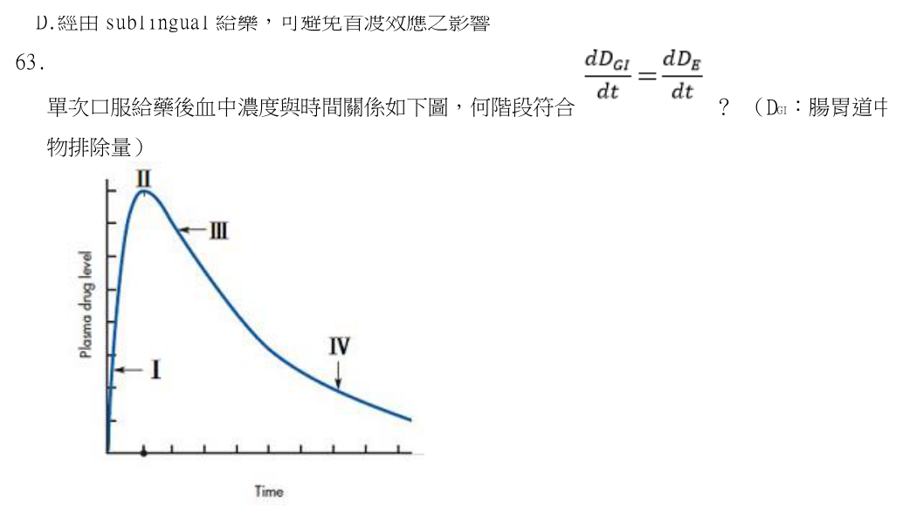
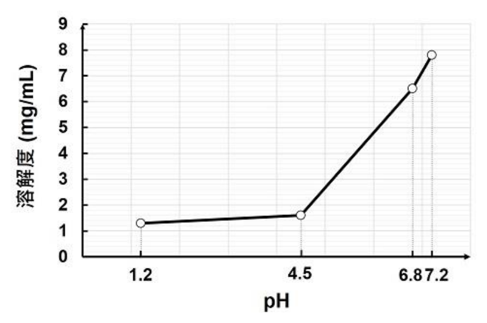
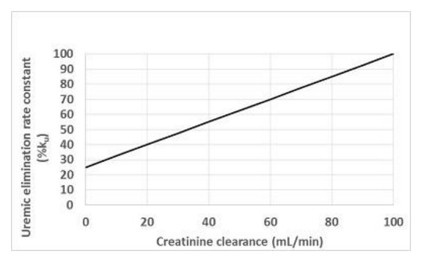

第 1 題待校
同一藥品粉碎成不同粒徑且為無凝絮或聚集之圓形顆粒，於lyophilic medium 中，依據Stokes equation， 下列那一個粒徑的顆粒沉降最快？
- （A）0.1 cm
- （B）10 -3 mm
- （C）100 μm
- （D）10 4 nm
答案：（A）
這一頁是民國 114 年第 1 次藥師藥劑學與生物藥劑學的整份歷屆試題，共 80 題，題目與標準答案出自考選部「國家考試試題及測驗式試題答案」開放資料，其中 74 題附有詳解。以下逐題列出題幹、選項與答案；要計時作答或記錄成績，請用線上練習。
考選部原始場次代碼：114020
線上作答這一科 →第 1 題待校
答案：（A）
答案：（C）
本題經考選部公告一律給分。若視為零級降解動力學，t1/2＝C0／(2k)＝1／(2×0.1)＝5小時，對應(C)；惟若誤判為一級動力學，以t=0時瞬時速率0.1 mg/mL/h推算k=0.1 hr-1，t1/2＝0.693／k＝6.93小時，對應(D)。題幹僅給定瞬間降解速率而未明示反應級數，零級與一級兩種合理解法分別導出(C)與(D)兩個不同答案，造成計算爭議。(A)2與(B)4均非任一解法之結果，可排除。作答以現行藥劑學動力學公式為準。
答案：（D）
正解：阿片樟腦酊（camphorated tincture）的阿片含量為 0.4%，折算嗎啡含量為 0.04%，與選項相符，故選 D。
A：酊劑（tincture）通常是由植物藥材或化學物質製成的醇性或水醇性溶液，不能概括為由動物材料製成。
B：酊劑的酒精濃度依處方而異，並非一般都超過 90%；酊劑的關鍵是醇性或水醇性溶媒，不是固定的極高酒精比例。
C：阿片酊（opium tincture）的阿片含量為 10%，不是 0.4%。兩者名稱相近，但阿片樟腦酊是稀釋的複方製劑，濃度不可互換。
本題考點：酊劑（tincture）——看到 tincture 時先判斷其為醇性或水醇性萃取／溶液製劑，不以單一酒精濃度定義；阿片製劑濃度（opium preparation strength）——名稱相近的阿片酊與阿片樟腦酊須分別記憶其濃度，不能由名稱直接類推。
第 4 題待校
答案：（A）
答案：（B）
正解：Syrup, NF 是將 85 g 蔗糖以適量純水溶解後製成 100 mL 的糖漿劑，屬 85% w/v 的標準組成，故選 B。
A：高濃度蔗糖會降低水活性並產生滲透壓抑菌效果，因此較稀的蔗糖溶液反而較容易長菌。
C：飽和蔗糖溶液冷卻後，蔗糖溶解度可能下降而析出結晶；飽和不表示冷藏時永不結晶。
D：50% sorbitol solution 的抑菌能力不足以保證無酒精糖漿的微生物安定性，通常仍須依配方考慮防腐劑。
本題考點：糖漿劑（syrup）——遇到標準糖漿配方時以蔗糖的 w/v 組成判斷，不把重量百分比與體積百分比混用；水活性（water activity）——高糖濃度通常抑制微生物，但溶液稀釋後須重新評估防腐需求。
答案：（B）
正解：製備芳香酏時，將水性溶液分次加入醇性溶液並用力振搖，可維持芳香成分的均勻分散並降低局部酒精濃度驟降造成析出的機會，故選 B。
A：芳香酏是加有芳香與甜味的水醇性載體，不必然含有具療效的藥物；把所有芳香酏都當作藥物製劑過度限縮了其用途。
C：滑石粉主要用於吸附、澄清或協助過濾芳香成分，不是以增稠和減少揮發為目的。
D：芳香酏處方中的芳香成分為複方橙皮醑（Compound Orange Spirit），並非名為芳香醑（Aromatic Spirit）的製劑；芳香醑是另一類濃縮醇性製劑，不能由名稱推定芳香酏必定含有它。
本題考點：芳香酏（aromatic elixir）——遇到水醇性芳香製劑時，先區分它是載體還是特定含藥製劑；醇水混合（hydroalcoholic mixing）——含芳香油成分時以分次混合與振搖避免局部溶媒組成改變導致析出。
答案：（C）
正解：微乳劑（microemulsion）在適當界面活性劑系統下可自發形成 o/w 或 w/o 型，並具有熱力學安定性，故選 C。
A：5 μm 等於 5,000 nm，已遠大於微乳劑通常的奈米尺度液滴，不符合微乳劑特徵。
B：微乳劑可依處方與安全性用於多種給藥途徑，不限於口服或外用塗抹。
D：微乳劑可將藥物分配或包覆於內相，常可用於改善口感與遮蓋苦味；不能說完全無助於苦味遮蔽。
本題考點：微乳劑（microemulsion）——判斷時以自發形成、奈米尺度與熱力學安定性為核心，而非只看外觀是否透明；乳相型態（o/w and w/o）——先判斷連續相與內相，再連結可行的給藥途徑與藥物分配。
答案：（D）
正解：乳劑分裂（breaking）是乳滴凝聚後的不可逆相分離；在乳化劑足夠且製備條件相同時，減少分散相液滴粒徑通常有利於降低乳析與凝聚，因此最不可能直接造成分裂，故選 D。
A：不適當的製備方式可能使乳化劑分布不均或界面膜不足，乳滴容易凝聚而分裂。
B：冷凍—解凍循環會造成液相分離與乳滴碰撞，可能破壞界面膜並導致凝聚。
C：不適當添加劑可能改變 pH、電解質環境或乳化劑的親水親油平衡，因而破壞乳劑安定性。
本題考點：乳劑分裂（emulsion breaking）——遇到不可逆相分離時，先找是否有界面膜破壞、凝聚或不相容添加物；液滴粒徑（droplet size）——在其他條件相同下，較小液滴可降低重力分層趨勢，不能直接視為分裂成因。
答案：（A）
正解：o/w 型乳劑的油滴比重 0.90 小於連續相的 1.20，故油滴會向上乳析。取向下為正，Stokes law 為 v = d²(ρd - ρc)g/(18η)。先換算粒徑：d = 5 μm = 5 × 10^-4 cm，d² = 2.5 × 10^-7 cm²；密度差為 ρd - ρc = 0.90 - 1.20 = -0.30 g/cm³。代入 v = [2.5 × 10^-7 cm² × (-0.30 g/cm³) × 981 cm/s²]/[18 × 0.5 g/(cm·s)] = -8.175 × 10^-6 cm/s。負號表示向上，速率大小換算為 8.175 × 10^-6 cm/s × 86,400 s/day = 0.706 cm/day，約為 0.7 cm/day，故選 A。
B：0.7 cm/day 的大小相同，但向下乳析須油滴密度大於連續相；本題油滴較輕，方向相反。
C：向上方向正確，但題目給定數值代入 Stokes law 得 0.706 cm/day，不是 0.14 cm/day。
D：此選項同時把方向判為向下，且速率也不符合由粒徑平方、密度差與黏度所得的結果。
本題考點：Stokes law——先以 d²、密度差、重力與黏度代入計算，單位須統一為 cgs 或同一套單位；乳析（creaming）——分散相密度小於連續相時向上移動，密度較大時才向下沉降。
答案：（D）
正解：aqueous nasal spray 的主要沉積部位是鼻腔黏膜，不以輸出可進入下呼吸道的 fine particles 或 fine droplets 為必要條件，故選 D。
A：dry powder inhaler 必須將藥物以可吸入的細粉末輸出，才能使藥物進入目標呼吸道部位。
B：jet nebulizer 的功能是把液體製劑霧化為可吸入的細液滴，細液滴正是其輸出形式。
C：soft mist inhaler 以緩慢移動的細霧輸出藥物，仍須形成適於吸入的液滴。
本題考點：呼吸道藥物遞送（respiratory drug delivery）——若目標是下呼吸道，先看裝置是否需產生可吸入的細粉末或細液滴；空氣動力學粒徑（aerodynamic particle size）——鼻腔局部噴劑與肺部吸入製劑的沉積需求不同，不可用同一粒徑判準。
答案：（A）
正解：易溶於水的壓縮氣體在加壓填充後會部分溶入製劑；震盪容器可加速氣液平衡，使 head space 的壓力達到所需狀態，故選 A。
B：短暫降溫只會暫時降低氣體壓力，不能保證恢復使用溫度後的 head space 壓力。
C：短暫降壓會減少容器內的壓力，與建立所需壓力的目的相反。
D：短暫升溫雖可暫時增加壓力，但不能取代氣體溶解與平衡步驟，且無法確保最終壓力穩定。
本題考點：壓力填充（pressure filling）——對可溶於製劑的壓縮氣體，填充後要使氣液兩相達平衡再判斷壓力；head space pressure——容器上方氣相壓力取決於氣相量、溶解量與溫度，不能只靠短暫改變溫度推定。
答案：（A）
正解：安定懸液劑應先使 cationic adsorbent 均勻分散，再加入 anionic flocculant 建立受控制的鬆散絮凝，最後加入 suspending agent 調整連續相黏度；順序為 ②→③→①，故選 A。
B：先加入 suspending agent 會先提高系統黏度，使後續 cationic adsorbent 的分散及 anionic flocculant 的均勻作用較難控制。
C：先加入 anionic flocculant，再加入 cationic adsorbent，容易在局部高濃度處產生電荷中和或過度聚集，不能先建立均勻吸附。
D：雖先加入 cationic adsorbent，但在加入 anionic flocculant 前先增黏，仍會妨礙絮凝劑均勻分布，不是較佳順序。
本題考點：絮凝（flocculation）——需先控制表面電荷與吸附，再建立可再分散的鬆散絮凝，避免緻密沉降；添加順序（order of addition）——同一配方的安定性取決於原料接觸順序，不能只看成分是否齊全。
答案：（C）
正解：氣化噴霧劑需由液化推進劑的液—氣平衡提供蒸氣壓；壓縮氣體在此類系統中沒有液態儲量可維持近乎固定的壓力，因此不適用，故選 C。
A：低分子量氫氟烴可在容器內形成液化推進劑並提供蒸氣壓，適用於氣化噴霧劑。
B：低分子量碳氫化合物同樣可作液化推進劑；使用時須另考量可燃性，但不影響其作為此類推進劑的身分。
D：混合使用推進劑可調整蒸氣壓、溶解性或噴霧特性，仍屬可用的液化推進劑策略。
本題考點：液化推進劑（liquefied propellant）——判斷氣化噴霧劑時，看推進劑是否能以液—氣平衡維持蒸氣壓；壓縮氣體（compressed gas）——氣體壓力會隨內容物排出而下降，與有液態儲量的推進劑系統不同。
答案：（C）
正解：Stokes law 為 dx/dt = d²(ρi - ρm)g/(18η)，粒子沉降速率取決於粒子與分散媒液的密度差，不是只與粒子密度 ρi 成正比；（C）漏掉分散媒液密度，故為錯誤敘述，故選 C。
A：重力常數 g 位於分子，沉降速率與 g 成正比，這個敘述正確，故非答案。
B：粒徑 d 以平方項出現在分子，粒徑加倍時速率會依 d² 增加，這個敘述正確，故非答案。
D：媒液黏度 η 位於分母，黏度增加會降低沉降速率，這個敘述正確，故非答案。
本題考點：Stokes law——計算沉降速率時同時代入 d²、密度差、g 與 η，不能遺漏任一項；密度差（density difference）——判斷沉降方向與大小時用 ρi - ρm，不以粒子絕對密度單獨判斷。
答案：（C）
正解：甘油明膠（glycerogelatin）會在皮膚上形成具附著性的保護膜，並非僅適合短時間使用；（C）的絕對限制不正確，故選 C。
A：其標準組成包含 gelatin 15% 與 glycerin 40%，這個敘述正確，故非答案。
B：製備時需加熱使 gelatin 溶解並形成均勻系統，這個敘述正確，故非答案。
D：可依使用目的加入 10% 藥品，這個敘述正確，故非答案。
本題考點：甘油明膠（glycerogelatin）——看到具附著性、會在皮膚上固化的外用基劑時，判斷其可提供較持續的局部保護；外用半固體製劑（topical semisolid preparation）——辨析時分開看基劑組成、加熱製程與用於皮膚後的停留特性。
答案：（C）
正解：階段一取 10 件檢品。平均淨含量為 10.2 g，10.2 g/10 g = 1.02 = 102%，符合平均量要求；但有一件為 8.8 g，8.8 g/10 g = 0.88 = 88%，低於 9.0 g/10 g = 90% 的個別門檻。因此須再取階段一兩倍數量，即 2 × 10 = 20 件，依合併檢品的平均內容量與僅一件少於 9.0 g 的條件判定，故選 C。
A：階段一的檢品數量不是 6 件，且 8.8 g 低於 90% 個別門檻，不能判為符合允收基準。
B：階段一的檢品數量雖為 10 件，但 8.8 g 少於 9.0 g，故階段一結果不能直接判為符合。
D：第二階段的個別含量判準是少於 9.0 g 的件數限制，不是把門檻改為少於 8.5 g。
本題考點：最低內容量（minimum fill）——先分開檢查平均含量與每一檢品的下限，兩者都須符合才可在第一階段接受；階段式抽樣（two-stage sampling）——第一階段未完全符合時，依規定加取指定數量並以合併結果判定，不可只看原本平均值。
答案：（B）
正解：眼用軟膏金屬粒子第一次檢測須取 a = 10 件；含 8 粒以上者不得超過 b = 1 件，且 50 μm 以上粒子總數不得超過 c = 50 粒，故選 B。
A：a = 8、b = 10、c = 10 均不符合第一次檢測的取樣數與容許粒子數，故非答案。
C：a = 30、b = 3、c = 150 的取樣數與門檻不是題目所問的第一次檢測規格，故非答案。
D：a = 10 雖與第一次取樣數相同，但 b = 3 與 c = 8 的容許條件錯置，不能據此判為合格。
本題考點：金屬粒子檢測（metal particle test）——遇到眼用軟膏的粒子規格時，同時核對取樣件數、單件高粒子數的容許件數與總粒子上限；第一次檢測（first-stage test）——題目指定初次檢測時，不能把後續階段或其他規格的數字混入。
答案：（A）
正解：水解反應是否有水相是本題的判別核心。單軟膏以烴類油性基劑為主，幾乎不提供水解所需的水相；親水軟膏則容易含有水相。易迅速水解的藥品置於單軟膏時反而較安定，因此（A）將兩者的安定性方向顛倒，故選 A。
B：蜂蠟可用來提高軟膏基劑的硬度，而羊毛脂等成分的比例亦會影響質地；因應氣候調整其用量，可使成品維持適當稠度。
C：一般軟膏劑以密蓋容器保存並於30℃以下儲存，可降低受熱軟化、氧化或受污染的風險，敘述符合一般貯藏原則。
D：熔合法須先加熱使可熔性基劑或成分熔融，再混合並冷卻成型；加熱正是此法與 incorporation 法的主要差異。
本題考點：水解安定性（hydrolytic stability）——易水解藥品優先避開含水或易帶入水相的基劑；軟膏基劑（ointment base）——調整蠟類與吸水性成分比例時，判斷重點是成品硬度、延展性與氣候適應性；熔合法（fusion method）——遇到須熔融的蠟狀或固體基劑時使用，並以冷卻過程完成半固體結構。
答案：（B）
正解：藥物從栓劑釋放的速度，取決於它是否傾向離開基劑而進入直腸液。water-soluble drug 與 oily base 的親和力低；基劑熔化後，藥物能迅速分配到水性直腸液，因此（B）最有利於釋放，故選 B。
A：oil-soluble drug 與 oily base 的親和力高，藥物容易留在油性基劑內。兩者同為親油性看似相容，卻正是限制藥物往水性直腸液分配的原因。
C：water-miscible base 雖可與直腸液混和或溶解，但 oil-soluble drug 本身進入水相的溶解度低，藥物由基劑釋出後仍受水相分配限制。
D：water-miscible drug 與 water-miscible base 的相容性較高，缺乏促使藥物離開基劑的強分配驅動力，不能據此判為最快釋放。
本題考點：栓劑釋放（suppository drug release）——判斷時先比較藥物在基劑與體液間的分配傾向，不只看基劑會不會熔融；分配係數（partition coefficient）——藥物在基劑溶解度低、在生理液溶解度高時，較容易離開基劑而被吸收。
答案：（D）
正解：本題要由密度因子的定義回推被藥品排替的基劑重量。令空白基劑每粒重量為 A g/粒、藥品重量為 B g/粒、含藥栓劑總重為 C g/粒。含藥栓劑中的剩餘基劑 = C - B g/粒；被排替的基劑 = A - (C - B) = A - C + B g/粒。密度因子 = 藥品重量/被排替基劑重量 = B/(A - C + B)，故選 D。
A：（A）的分母寫成 A - B + C，沒有由含藥栓劑的總重扣回實際剩餘基劑，藥品重量與含藥栓劑重量的正負號因此顛倒。
B：（B）以 C 作為分子，但 C 是含藥栓劑的總重量；密度因子的分子應是實際加入的藥品重量 B。
C：（C）的 A + B + C 是三個總重量的相加，不能代表一粒空白栓劑中被藥品取代的基劑重量。
本題考點：密度因子（density factor）——先求藥品取代了多少基劑，再以藥品重量除以被取代基劑重量；栓劑替代量（displacement value）——含藥栓劑的總重減去藥品重量才是剩餘基劑，不能直接把總重當成基劑重量。
答案：（D）
正解：皮膚外用軟膏與眼用等無菌製劑的品質要求不同。一般供完整皮膚外用的軟膏並不以無菌為常規要求，只有製劑用途另有無菌要求時才須依其規格處理，因此（D）最正確，故選 D。
A：stearyl alcohol 為蠟狀固體，通常須以加熱熔融後與基劑混合；這種情況較適合 fusion 法，不是單純以 incorporation 法處理。
B：成分會與金屬反應時，應改用不會反應的調藥刀或容器；這限制的是器具材質，並不表示 incorporation 法本身不可使用。
C：levigation 是以少量適當液體研細粉末並製成平滑糊狀物，目的在減少砂礫感與改善分散均勻性，不是為了增加充填時的流動性。
本題考點：軟膏製備法（ointment preparation）——蠟狀成分須熔融時選 fusion 法，常溫可混入基劑的成分才考慮 incorporation 法；研細法（levigation）——不溶性粉末要均勻分散並降低粗糙感時使用；無菌製劑（sterile preparation）——是否須做無菌試驗取決於給藥部位與製劑規格，不能由劑型名稱一概而論。
答案：（B）
正解：可可脂的多晶型中，β-form 熔點最高、晶格排列最緊密規則，是熱力學上最安定的型態，也是製備栓劑或巧克力時最終希望穩定停留的晶型，故選 B。
A：α-form 屬急速冷卻下先形成的不安定晶型，熔點最低，容易再轉型為更安定的型態。
C：γ-form 同樣是較不安定的過渡晶型，熔點介於各型之間，會逐漸轉型。
D：δ-form（有時對應 β' 型的描述）雖較 α、γ 安定，但穩定度仍不及 β-form。
本題考點：可可脂的多晶型性（cocoa butter polymorphism）——α、β'（γ）、β 之間熔點與安定度依序遞增，β-form 為最終熱力學最安定的晶型，是栓劑或巧克力製備時控制結晶條件所要達到的目標型態。
答案：（D）
正解：形成共熔混合物的判準，是兩種固體接觸後能否使熔點明顯下降，進而軟化或液化。magnesium carbonate 為無機礦物性粉末，並非此類常見會與有機藥品形成共熔而液化的物質，因此是題目所問的除外者，故選 D。
A：aminopyrine 屬常見可能形成共熔混合物的有機藥品；與相容性差的固體接觸時，宜避免過度研磨與局部受壓。
B：chloral hydrate 容易在固體混合時出現軟化或液化問題，適合以調藥刀法輕混，以減少研磨產生的接觸與熱。
C：prilocaine 也屬題目所指可能造成共熔軟化的藥品，不是可排除在共熔風險外的物質。
本題考點：共熔混合物（eutectic mixture）——兩固體混合後若共熔點低於操作或貯存溫度，便要預期軟化或液化；調藥刀法（spatulation）——對易形成共熔的粉末採輕混，避免長時間研磨加劇局部液化。
答案：（B）
正解：軟膠囊殼的塑化需要能增加 gelatin 分子鏈活動性的成分。sorbitol 為多元醇，可降低膠殼脆性並增加柔軟與延展性，因此（B）可增加軟膠囊的塑化性，故選 B。
A：ethanol 主要作為溶媒或揮發性成分，並非軟膠囊膠殼常用的塑化劑；它還可能改變 gelatin 與水的系統平衡。
C：sugar 不是用來使 gelatin 膠殼保持柔韌的標準塑化成分，不能以其可溶於水便推論具有塑化效果。
D：titanium dioxide 的用途是使膠殼不透明或著色，不會增加高分子鏈的可動性。
本題考點：塑化劑（plasticizer）——能降低高分子鏈間作用並增加柔韌性的成分，才可用來改善膠殼脆裂；軟膠囊殼（soft gelatin shell）——塑化性、含水量與乾燥條件共同決定膠殼的彈性與機械強度。
答案：（B）
正解：氣體在粉末上的物理吸附通常為放熱過程。溫度升高時，吸附分子較容易脫附，平衡會往氣相移動，所以在其他條件相同下吸附量下降；因此（B）最適當，故選 B。
A：氣體吸附法測定粉末比表面積通常以 BET adsorption equation 描述吸附等溫線，不是處理溶液界面表面過量的 Gibbs adsorption equation。
C：固定溫度下提高氣體壓力，通常會增加粉末表面的吸附量，直到逐漸接近飽和；方向並非降低。
D：此法主要利用物理吸附，降低壓力或改變條件後可發生脫附，通常具有可逆性。
本題考點：氣體吸附法（gas adsorption method）——由氣體吸附等溫線估算粉末比表面積時，先辨別物理吸附的壓力與溫度依賴性；BET 方程式（BET adsorption equation）——適用於以單層至多層物理吸附資料推估比表面積；物理吸附（physisorption）——多為放熱且可逆，升溫傾向使吸附量下降。
答案：（B）
答案：（C）
正解：細顆粒的表面積雖大，流動性卻通常會因顆粒間作用力增強而下降。粒徑愈小時，凝聚力相對於重量的影響愈明顯，細粉比粗粉更容易架橋或團聚；因此（C）將流動性方向說反，故選 C。
A：外用粉劑通過100號篩可減少粗粒對皮膚的機械刺激，符合外用粉末須細緻的要求。
B：粒徑減小會增加總表面積；在其他條件相同下，與溶媒接觸的面積增加可提高溶解速率。
D：粉劑在需要辨識或改善外觀時，可加入法定色素；前提是色素種類與用量符合製劑規範。
本題考點：粉體流動性（powder flowability）——細粉雖有較大比表面積，但顆粒間凝聚力強時流動性反而變差；粒徑與溶解速率（particle size and dissolution rate）——其他條件相同時，縮小粒徑增加接觸面積，才可加快溶解；外用粉劑（topical powder）——判斷時同時看粒徑細緻度、刺激性與允許的賦形劑。
答案：（B）
正解：中華藥典規定崩散度試驗網架升降頻率為每分鐘 29 至 32 週期，這是儀器操作條件中經常被考的具體數值，敘述正確，故選 B。
A：標準做法是先取 6 顆錠劑進行試驗，若有 1 至 2 顆未能在規定時間內完全崩散，才另取 12 顆（合計 18 顆）重新試驗，本選項所述「先取 10 顆、另取 20 顆」的數目與標準規定不符。
C：崩散度試驗網架升降過程中，藥典管制的是「網篩」（網架下緣浸入液面下的部分）與液面、容器底的距離——上升行程最高點時網篩仍須低於液面至少 2.5 cm，下降行程最低點時網篩距容器底不少於 2.5 cm，並非要求整個網架頂端持續浸沒在液面之下；選項把管制對象誤植為「網架頂端」，故不正確。
D：崩散度試驗評估的是劑型是否崩解成無明顯硬心的碎片或軟團塊，並非要求有效成分完全溶解；「完全溶解」屬於溶離度試驗（dissolution）而非崩散度試驗（disintegration）的判定標準，兩者混為一談並不正確。
本題考點：中華藥典崩散度試驗操作條件——網架升降頻率每分鐘 29 至 32 週期、初次試驗取樣數與追加試驗數目，都是具體規定的操作參數；崩散度與溶離度的判定標準不同——前者看外觀崩解程度，後者才看有效成分是否溶出。
答案：（C）
正解：脆度試驗若已出現明顯錠劑破損，即表示該次檢品不符合外觀完整性。裂紋、開裂或碎片不是可藉由再做兩次試驗消除的偶發結果，而應直接判定該次試驗不合格，因此（C）錯誤，故選 C。
A：單位重量650 mg或以下的錠劑，取樣總重接近6.5 g，可使脆度試驗有足夠且一致的檢品量。
B：試驗前除去表面粉塵並精確秤重，可避免把原有粉塵誤算為磨耗；置入脆度計轉動100次後再比較重量，程序正確。
D：大多數錠劑以平均重量減少不超過1％作為可接受的脆度標準，重點是磨耗後仍保持足夠機械強度。
本題考點：錠劑脆度（tablet friability）——量測前後重量差以評估運輸與操作時的耐磨耗能力；失效判讀（failure criterion）——明顯裂紋、開裂或碎片屬完整性失敗，不能只因重量損失未超限便忽略；藥典試驗程序（pharmacopoeial test procedure）——取樣重量、轉數與允收標準須同時符合規定。
答案：（D）
正解：軟膠囊的特色是可形成具彈性的密封膠殼並以連續製程充填。除了液體或半固體內容物外，適當配方與製程下也可充填固體粉末，所以（D）正確，故選 D。
A：軟膠囊可利用 rotary-die 等連續製程進行自動化充填與封合，正是適合大量生產的劑型之一。
B：軟膠囊的給藥途徑可依配方與用途設計，並非僅限口服；不能以最常見的口服用途排除其他應用。
C：膠殼通常需要塑化劑維持柔韌性，例如 glycerin 或 sorbitol；若完全不含塑化劑，膠殼反而容易脆裂。
本題考點：軟膠囊（soft gelatin capsule）——判斷其適用內容物時，不要只記成液體膠囊，還要看充填物與膠殼的相容性；連續封合製程（rotary-die process）——同時完成膠殼成形、充填與封合，適合自動化大量生產；塑化劑（plasticizer）——維持膠殼彈性時不可與著色劑或遮光劑混淆。
答案：（C）
正解：要直接取得粒子體積，須量到每一粒子排開的電解質體積。Coulter counter 讓懸浮粒子通過小孔時產生與粒子體積成比例的電阻變化脈衝，據此可直接求得粒徑分布與平均粒徑，因此選項（C）符合題意，故選 C。
A：sieve shaker method 以篩孔大小將粒子分級，再由各級留存量推估粒徑；它量的是通過篩孔的幾何尺寸，不是直接量粒子體積。
B：sedimentation method 依粒子在流體中的沉降速度換算粒徑，結果受密度、黏度與沉降行為影響，屬間接推算。
D：cascade impaction method 以粒子在氣流中的慣性撞擊分級，主要反映空氣動力學粒徑，不是個別粒子體積的直接測量。
本題考點：庫爾特計數法（Coulter counter method）——粒子通過電解質小孔所造成的電阻脈衝與粒子體積相關，適用於直接量測體積分布；粒徑測定（particle size analysis）——先分辨方法得到的是幾何粒徑、沉降粒徑、空氣動力學粒徑或體積等效粒徑，再判斷能否互相比較。
答案：（A）
正解：沖頭表面殘留物會干擾錠冠的壓縮與脫模，容易使錠冠與錠身分離。這種上、下表面局部或完全脫離的缺陷稱為 capping，因此（A）正確，故選 A。
B：splitting 是錠劑沿裂縫分裂的外觀問題，判別時須從錠體內部應力、配方黏結性或含水狀態著手，並非沖頭未清潔的典型結果。
C：laminating 是錠劑分離成多層，常與空氣夾帶、壓縮條件或彈性回復有關；它與錠冠脫離的 capping 不是同一缺陷。
D：softness 指硬度不足，通常反映壓縮力、黏合劑或水分條件不當，不能由沖頭清潔不良直接判定。
本題考點：錠劑帽裂（capping）——錠冠與本體分離時先檢查沖頭、壓縮與脫模條件；錠劑層裂（lamination）——出現多層分離時重點在空氣夾帶與彈性回復，不能與 capping 混用；錠劑缺陷（tablet defects）——依破損位置與外觀分類，才能回推製程或配方原因。
答案：（D）
正解：類毒素保留抗原性但已去除毒性，目的在誘發受接種者自行產生免疫反應。它使人體形成特異性抗體與免疫記憶，提供的是主動免疫，不是直接給予現成抗體的被動免疫；因此（D）錯誤，故選 D。
A：細菌毒素經純化後以 formaldehyde 去除毒性並保留抗原性，是製備類毒素的核心處理概念。
B：類毒素可與其他類毒素或疫苗組成混合製劑施打，目的是在一次接種中建立多種抗原的主動免疫反應。
C：類毒素的效價可用凝絮單位 Lf 表示，該單位用於表達其與相應抗毒素的反應強度。
本題考點：類毒素（toxoid）——毒性去除後仍保留抗原性時，可作為疫苗誘發主動免疫；主動與被動免疫（active and passive immunity）——人體自行產生抗體與記憶為主動免疫，直接給予免疫球蛋白或抗體才是被動免疫；凝絮單位（flocculating unit, Lf）——判讀類毒素效價時使用，不等同於臨床劑量。
答案：（B）
正解：疫苗佐劑與防腐劑的功能不能混為一談。thimerosal 的主要作用是抑制微生物污染而作為防腐劑，並不是因高抗原吸附能力而作為佐劑；高抗原吸附能力是鋁鹽佐劑的重要特性，因此（B）錯誤，故選 B。
A：鋁鹽佐劑是最早獲得主管機關核准使用的疫苗佐劑類型之一，能藉由抗原吸附與免疫刺激增強反應。
C：HCP 雖不是刻意添加的標準佐劑，但其殘留成分可能影響宿主免疫反應，因此可能具有佐劑效用。
D：BCG 具有免疫刺激作用，也可作為佐劑使用；判斷時要看其增強免疫反應的功能，而不是只把它視為疫苗本體。
本題考點：疫苗佐劑（vaccine adjuvant）——能增強或調節對抗原的免疫反應者才屬佐劑，常見判準包括抗原吸附與免疫刺激；防腐劑（preservative）——主要控制製劑中的微生物污染，不可因其存在於疫苗配方就當作佐劑；抗原吸附（antigen adsorption）——鋁鹽的吸附特性與 thimerosal 的防腐功能必須分開判斷。
答案：（D）
正解：防止蛋白質在容器或氣液界面吸附，需優先看成分是否具有界面活性。mannitol 是常用的糖醇型賦形劑，可作為成形或張力調整相關成分，但不是以阻止表面吸附為主要作用的界面活性劑；因此（D）配對錯誤，故選 D。
A：ascorbic acid 可藉抗氧化保護作用協助維持蛋白質構型的安定，與題目所列配對相符。
B：aspartic acid 可用來抑制蛋白質的異構化，重點在降低化學降解途徑，而不是防止界面吸附。
C：polysorbate 20 具界面活性，可減少蛋白質聚集，特別能降低蛋白質在界面受擾動後的凝集。
本題考點：蛋白質安定化（protein stabilization）——先辨別失效途徑是氧化、異構化、聚集或表面吸附，再選擇相應賦形劑；界面活性劑（surfactant）——要降低蛋白質在容器與氣液界面的吸附或聚集時，優先考慮 polysorbate 類；mannitol——作為糖醇型賦形劑時不能與表面活性劑的角色混淆。
答案：（D）
正解：中華藥典所列高壓蒸氣滅菌條件通常落在 115 至 129℃ 左右的飽和水蒸氣範圍內（如 115～116℃ 30 分鐘、121℃ 20 分鐘、126℃ 15 分鐘），150℃ 並不是這套飽和蒸氣滅菌條件表中的標準組合，把它列為藥典規定的高壓蒸氣滅菌條件並不正確，故選 D。
A：115～116℃ 受熱 30 分鐘，屬藥典所列較低溫、較長時間的標準滅菌條件組合之一，敘述正確。
B：121℃ 受熱 20 分鐘，是高壓蒸氣滅菌最常引用的代表性條件，敘述正確。
C：126℃ 受熱 15 分鐘，屬藥典所列較高溫、較短時間的標準組合之一，敘述正確。
本題考點：中華藥典高壓蒸氣滅菌的時間溫度組合——標準條件集中在 115 至 129℃ 左右的飽和蒸氣範圍，時間隨溫度升高而縮短；150℃ 已超出這套飽和蒸氣滅菌條件表的常見範圍，不屬於藥典所列的標準組合。
答案：（C）
正解：濕熱與乾熱的主要殺菌機轉不同，是辨別本題的關鍵。蒸氣滅菌利用濕熱與蒸氣凝結釋放的熱使微生物蛋白質變性或凝固；脫水氧化是乾熱滅菌的主要機轉，故（C）將兩者混淆而錯誤，故選 C。
A：乾熱滅菌適用於非揮發油、耐熱粉末與非水性溶液等不宜接受濕熱的製劑或物料，敘述正確。
B：過濾滅菌的截留效果除孔徑外，也會受濾器與微生物電荷、溶液 pH 值、溫度及壓力影響，須一併考量。
D：氣體滅菌可用於對熱不安定的酵素製劑，但須先確認藥品與氣體之間不會產生有害化學反應，敘述正確。
本題考點：濕熱滅菌（moist heat sterilization）——蒸氣使微生物蛋白質變性或凝固時使用，判斷時不可寫成脫水氧化；乾熱滅菌（dry heat sterilization）——以脫水與氧化為主要機轉，適合耐熱且不宜受潮的物料；過濾滅菌（filtration sterilization）——對熱不安定溶液要同時確認孔徑、電荷交互作用與製程條件。
答案：（D）
正解：高壓蒸氣滅菌可殺滅微生物，卻不能作為內毒素去除法。內毒素是革蘭陰性菌脂多醣（lipopolysaccharide, LPS）的耐熱成分；滅菌後即使細菌已死亡，殘留的內毒素仍可致熱，因此（D）把高壓蒸氣滅菌說成可消除內毒素為錯誤敘述，故選 D。
A：LAL 試驗利用鱟血細胞溶解物對 LPS 的凝膠或顯色反應，可檢出細菌內毒素，敘述正確，故非答案。
B：實驗兔熱原試驗觀察體溫反應，能反映內毒素及其他可致熱物質的整體熱原性，範圍較 LAL 試驗廣，敘述正確。
C：單核球活化試驗以人類單核球釋放細胞激素的反應評估熱原，可用於取代或減少實驗兔熱原試驗，敘述正確。
本題考點：細菌內毒素（bacterial endotoxin）——判斷去除方法時，先區分「殺菌」與「去除耐熱 LPS」，高壓蒸氣僅能處理前者；鱟血細胞溶解物試驗（Limulus amebocyte lysate, LAL test）——要檢出革蘭陰性菌內毒素時使用，不能等同於所有熱原；熱原試驗（pyrogen test）——需涵蓋非內毒素熱原時，以生物反應型試驗判斷。
答案：（C）
正解：對抗 Pseudomonas 的關鍵在（C）同時含 benzalkonium chloride 與 polymyxin B sulfate；polymyxin B 對革蘭陰性菌外膜具破壞作用，能補強抗 Pseudomonas 活性，故選 C。
A：benzethonium chloride 是防腐劑，disodium ethylenediaminetetraacetate 主要以螯合金屬離子增效，這個組合不具（C）polymyxin B 所提供的可靠抗 Pseudomonas 作用。
B：phenylmercuric nitrite 雖可作眼用製劑防腐劑，但對 Pseudomonas 的抑制不如含 polymyxin B 的組合；分辨關鍵在是否具有針對革蘭陰性菌外膜的成分。
D：chlorobutanol 可作部分眼用製劑的防腐劑，卻不是有效涵蓋大多數 Pseudomonas 的選擇，因此不能取代（C）的組合。
本題考點：眼用製劑防腐系統（ophthalmic preservative system）——選擇防腐劑時要同時看濃度與目標菌種，不能只以「可防腐」推定可抑制 Pseudomonas；polymyxin B（polymyxin B）——遇到革蘭陰性菌尤其 Pseudomonas 的誘答時，辨認其作用於外膜的特性。
答案：（C）
正解：中華藥典所列的眼球後注射、結膜下注射與視網膜下注射，並未以劑型一概排除懸液劑；臨床上 depot 型類固醇懸液即用於結膜下與眼球後注射，是否適用仍受無菌性、粒徑、注射途徑與個別製劑規格限制。（C）以「不可」作全面否定，屬過度絕對的敘述，故選 C。
A：羥丙基甲基纖維素可提高眼用溶液黏度，使製劑在角膜表面的滯留時間增加，敘述正確。
B：眼用懸液劑的粒子通常控制在小於 10 μm，以降低砂礫感與眼部刺激；粒徑控制是懸液劑品質的重要環節，敘述正確。
D：眼用溶液劑確可用於題幹所列的眼球後注射、結膜下注射及視網膜下注射，敘述正確，故非答案。
本題考點：眼用製劑（ophthalmic preparations）——判斷特定途徑是否可用時，先看無菌、粒徑與該製劑規格，不以「懸液劑」三字直接否定；黏度增強劑（viscosity enhancer）——欲延長角膜接觸時間時，選擇可提高滯留性的聚合物；粒徑控制（particle-size control）——眼用懸液劑須以小粒徑減少刺激並維持均一性。
答案：（B）
正解：單支裝人工淚液通常以一次使用後丟棄為設計前提，重點是避免防腐劑對眼表造成刺激或毒性。（B）benzalkonium chloride 是常見防腐劑，最不適合作為單支裝人工淚液的必要組成，故選 B。
A：sodium chloride 可用來調整滲透壓，使人工淚液較接近淚液環境，是合理的組成成分。
C：boric acid 可作緩衝系統的成分，協助維持製劑適當 pH，並不因單支裝而被排除。
D：polyethylene glycol 400 可提供潤滑與增加保水性的效果，常見於人工淚液類製劑，與單支裝用途相符。
本題考點：單支裝眼用製劑（unit-dose ophthalmic preparation）——一次使用後即丟棄的製劑，判斷時優先排除為多次使用而設的防腐系統；benzalkonium chloride（benzalkonium chloride）——辨析人工淚液時，將其視為防腐劑而非保濕潤滑成分；人工淚液（artificial tears）——等張、緩衝與潤滑是配方功能，須與防腐需求分開判讀。
答案：（A）
正解：可經添加適當成分調整為等滲透壓後供血管注射者，必須本身是無菌且供注射調配使用的水。（A）Sterile Water for Injection 符合此條件；加入適當溶質調整後始可供血管注射，故選 A。
B：Water for Injection 是製備注射製劑的高純度用水，並非已完成的無菌最終注射用製劑，不能直接以題幹方式供血管注射。
C：Purified Water 的品質用途不等同注射用水，不能只靠調整滲透壓便轉為可供血管注射的製劑。
D：Sterile Water for Irrigation 雖為無菌水，標示用途是沖洗，並非供血管注射；滅菌不代表用途可互換。
本題考點：無菌注射用水（Sterile Water for Injection）——判斷能否作靜脈注射載體時，先確認無菌最終製劑身分，再看是否已調整等滲透壓；注射用水（Water for Injection）——製程用水與可直接給藥的最終製劑須分開；沖洗用無菌水（Sterile Water for Irrigation）——依標示用途區分，不能因為無菌便推定可血管注射。
答案：（C）
正解：實驗兔熱原試驗補做至 8 隻時，若上升 0.6℃ 以上者超過 3 隻（即 4 隻以上），或 8 隻總升溫超過 3.7℃，即判定不合格。（C）有 4 隻各上升 0.6℃，已超過 3 隻的上限，總升溫為 0.6 × 4 + 0.2 × 4 = 3.2℃，故選 C。
A：體溫下降不構成升溫，其餘兩隻各上升 0.4℃，總升溫為 0.8℃，未達初試需拒收或續試的條件，故非答案。
B：3 隻的總升溫為 0.4 + 0.4 + 0.6 = 1.4℃，其中 1 隻上升 0.6℃，屬須補做後續試驗的情形，尚非可確認判定不合格。
D：8 隻總升溫為 0.6 × 2 + 0.4 × 4 + 0.2 × 2 = 3.2℃，且只有 2 隻各上升 0.6℃，未超過 3 隻的上限，總升溫亦未超過 3.7℃，判為合格。
本題考點：實驗兔熱原試驗（rabbit pyrogen test）——先分初試與補做後的 8 隻判定，不能把「需續試」當作「已不合格」；個別升溫判定（individual temperature rise）——8 隻中達閾值的兔數是獨立拒收條件，先數隻數再看總和；總升溫判定（sum of temperature rises）——加總時只累計上升值，並與相應階段的總量標準比較。
答案：（A）
正解：注射劑必須讓外觀能反映品質，不能以顏色遮蔽混濁、變色或異物等可見異常，因此（A）著色劑屬嚴格禁止加入的添加劑，故選 A。
B：抗菌劑可在符合適應性與安全性限制下用於部分多劑量注射劑，並非所有注射劑一概禁止，故非答案。
C：緩衝劑可用來調整或維持適當 pH，以兼顧藥品安定性與注射耐受性，屬可依配方需求使用的添加劑。
D：安定劑可降低氧化、水解或其他劣化風險；只要不影響安全性與相容性，並非嚴格禁止的成分。
本題考點：注射劑添加劑（parenteral excipients）——判斷禁止項目時，先看是否會掩蓋可見品質缺陷或造成不可接受的安全風險；著色劑（coloring agent）——注射劑外觀是品質檢查的一環，不得用顏色遮蔽異常；防腐劑與安定劑（antimicrobial preservative and stabilizer）——兩者可否使用取決於劑型、途徑與安全性，不能視為全面禁用。
答案：（B）
正解：一般球形微脂體依粒徑分類時，smaller vesicles 的粒徑上限為 0.20 μm；超過此範圍便不再屬這一較小粒徑級距，故選 B。
A：0.02 μm 是較小粒徑範圍的下緣量級，不是 smaller vesicles 的上限，因此不能選作題目所問數值。
C：1.00 μm 已超出 0.20 μm 的 smaller vesicles 上限，屬較大型微脂體的粒徑範圍。
D：2.00 μm 比 smaller vesicles 的上限更大，不能作為此分類的界線。
本題考點：微脂體粒徑分類（liposome size classification）——題目問上限時，先辨認所屬粒徑級距，不把下限或相鄰較大級距混入；smaller vesicles（smaller vesicles）——以 0.20 μm 為上限判讀，數值超過即排除。
答案：（D）
答案：（D）
正解：Procardia XL ER® 的 osmotic drug-release system 由水穿過半透膜後形成的滲透壓差驅動，釋放速率主要不受胃腸道酸鹼值影響，因此（D）最適當，故選 D。
A：此系統的主要驅動力是水移入所造成的滲透壓，而非系統內外藥品濃度梯度；後者是擴散控制系統常見的判準。
B：半透膜的水分穿透性會影響進水速度與內部壓力建立，因而直接影響藥品釋放速率，敘述相反。
C：藥品釋放後留下的惰性外殼通常不被人體分解吸收，而是隨糞便排出；這是 osmotic system 外殼與可吸收藥物的區別。
本題考點：滲透壓控制釋放系統（osmotic drug-release system）——判斷驅動力時看半透膜進水與滲透壓，不混同為濃度梯度擴散；pH-independent release（pH-independent release）——要降低胃腸道 pH 對釋放的影響時，辨認滲透壓幫浦的設計；半透膜外殼（semipermeable membrane）——外殼負責控水與維持結構，不能推定會被人體吸收。
答案：（D）
正解：microencapsulation 的包覆材料須能形成連續囊壁並控制內容物釋放。（D）lactose 易溶於水且不具穩定成膜囊壁的特性，相對最不適合當作包覆材料，故選 D。
A：gelatin 可藉相分離等方式形成囊壁，是經典的微囊包覆材料，敘述不符題意。
B：polyvinyl alcohol 具有成膜性，可依製程作為微囊壁材或相關聚合物成分，並非最不適用者。
C：ethylcellulose 是疏水性成膜聚合物，可用於延緩內容物釋放的包覆層，與 microencapsulation 用途相符。
本題考點：微囊化（microencapsulation）——選壁材時先看能否形成連續膜並提供所需的阻隔或釋放控制；成膜聚合物（film-forming polymer）——gelatin、polyvinyl alcohol 與 ethylcellulose 要依溶解性及製程選用；lactose（lactose）——作為賦形劑時可有其他用途，但不能因可加入配方就推定適合形成微囊壁。
答案：（D）
正解：固定劑量、固定間隔多次口服給藥的蓄積指數可表示為 R = 1 / (1 - e^-kτ)。給藥間隔 τ 增加時，e^-kτ 變小、分母變大，R 因而變小，所以（D）正確，故選 D。
A：穩定狀態平均血中濃度遵循 Css,avg = F·D / (CL·τ)；清除率 CL 越小，Css,avg 應越大，敘述方向相反。
B：達穩定狀態所需時間主要由排除半衰期決定，通常以數個半衰期估計；給藥更頻繁改變的是濃度波動與蓄積程度，不會直接縮短此時間。
C：穩定狀態一個給藥間隔內排除的量，應與進入全身循環的藥量平衡；口服時是 F·D，不一定等於吞服的劑量 D。
本題考點：蓄積指數（accumulation index）——固定給藥下以 R = 1 / (1 - e^-kτ) 判斷，間隔越短越容易蓄積；穩定狀態平均濃度（average steady-state concentration）——看 F、劑量、CL 與 τ，清除率下降時濃度上升；穩定狀態質量平衡（steady-state mass balance）——每間隔排除量等於系統性吸收量，不等於未校正 F 的口服劑量。
答案：（B）
正解：多次口服給藥的 Css,max 會受給藥間隔影響。間隔縮短時，前一劑殘留較多、蓄積增加，下一劑後的峰濃度可提高；間隔拉長則相反，因此（B）的「不會受到給藥間隔影響」為錯誤敘述，故選 B。
A：Css,max 是穩定狀態下的最高暴露濃度，可用來評估是否接近毒性範圍，敘述正確，故非答案。
C：維持 Css,max 低於最低中毒濃度，是避免峰濃度造成毒性的基本安全判準，敘述正確。
D：將穩定狀態的 Css,max 與單次給藥後峰濃度比較，可看出是否發生蓄積，敘述正確。
本題考點：穩定狀態峰濃度（maximum steady-state concentration, Css,max）——評估高峰毒性時看 Css,max，並將其與最低中毒濃度比較；給藥間隔（dosing interval）——在劑量不變下，間隔改變會改變前劑殘留與蓄積，不能視為無影響；藥物蓄積（drug accumulation）——以穩定狀態與單次給藥的濃度差異判讀。
答案：（C）
正解：本題已給單次口服後的 AUC，在線性藥動學下，穩定狀態一個給藥間隔的 AUCτ 等於同劑量單次給藥的 AUC。平均血中濃度用 Css,avg = AUCτ / τ，故 Css,avg = 180 μg·h/mL / 6 h = 30 μg/mL，故選 C。
A：10 μg/mL 若乘回 6 h，只會得到 60 μg·h/mL，與題目給的 180 μg·h/mL 不符。
B：20 μg/mL 乘回 6 h 為 120 μg·h/mL，仍未達題目 AUCτ，不能作為平均濃度。
D：40 μg/mL 乘回 6 h 為 240 μg·h/mL，會高估一個給藥間隔內的總暴露量。
本題考點：穩定狀態平均濃度（average steady-state concentration）——已知一個間隔 AUCτ 時，直接以 AUCτ / τ 求 Css,avg；曲線下面積（area under the curve, AUC）——AUC 的量綱為濃度乘時間，不可直接當作濃度；線性藥動學（linear pharmacokinetics）——同一劑量下，穩定狀態每一間隔的暴露量可與單次 AUC 對應。
答案：（D）
正解：就題目所稱的目標平均血中濃度而言，到達該目標的蓄積時間主要受排除半衰期支配，不會因單純改變維持劑量或給藥間隔而縮短。loading dose 可在治療開始時先補足目標體內藥量，繞過逐次蓄積的等待期，因此僅搭配 loading dose 正確，故選 D。
A：縮短給藥間隔、增加劑量與減緩排除都不能縮短由半衰期決定的蓄積時間；其中減緩排除還會使半衰期變長，方向相反。
B：雖然 loading dose 可使濃度迅速接近目標，但縮短給藥間隔與減緩排除不是縮短到達穩定狀態時間的方法，故此組合不對。
C：縮短給藥間隔與增加劑量會改變濃度曲線或目標濃度，卻不改變排除半衰期，不能取代 loading dose。
本題考點：達穩定狀態時間（time to steady state）——固定藥動參數下以排除半衰期判斷，改劑量或間隔不會直接縮短；負荷劑量（loading dose）——需要快速達到目標濃度時先補足體內藥量，再以維持劑量維持；維持劑量（maintenance dose）——主要決定長期濃度水準，不是縮短蓄積時間的工具。
答案：（A）
正解：Css,avg = AUC(0-τ,ss) ÷ τ，這是由穩定狀態下單一給藥間隔內的曲線下面積直接求得平均濃度的基本公式，與劑量、F、Vd 等其他參數無關（因為這些參數已經反映在 AUC 之中）。代入題目給定的 AUC(0-τ) = 300 μg·h/mL、τ = 6 h：Css,avg = 300 ÷ 6 = 50 μg/mL，故選 A。
B：65 μg/mL 若要成立，AUC(0-τ) 需為 390 μg·h/mL，與題目給定的 300 不符。
C：75 μg/mL 對應的 AUC(0-τ) 需為 450 μg·h/mL，同樣與題目數值不符。
D：85 μg/mL 對應的 AUC(0-τ) 需為 510 μg·h/mL，明顯超出題目給定的數值，不合理。
本題考點：穩定狀態平均血中濃度的定義（Css,avg = AUC(0-τ,ss)/τ）——只要已知一個給藥間隔內的 AUC 與給藥間隔本身，就能直接求出平均濃度，不需要額外用到劑量、F、Vd 等參數；題目另外提供的 Cmax,ss、Cmin,ss 數值僅作為佐證，Css,avg 理應落在兩者之間。
答案：（D）
正解：生體可用率要比較兩條給藥途徑的劑量標準化 AUC。靜脈注射時 AUCiv = ∫ A e^-0.5t dt = A / 0.5 = 2A；口服時 AUCpo = ∫ 2A（e^-0.1t - e^-0.5t）dt = 2A × （1 / 0.1 - 1 / 0.5） = 16A。故 F = （AUCpo / 50 mg） / （AUCiv / 5 mg） = （16A / 50 mg） / （2A / 5 mg） = 0.8，故選 D。
A：0.1 並非兩條途徑做劑量標準化後的 AUC 比值；若只比較未校正劑量的暴露量，會忽略 50 mg 與 5 mg 的差異。
B：0.2 未符合 F = （AUCpo / Dosepo） / （AUCiv / Doseiv）的計算結果，不能由題目兩個濃度－時間式推得。
C：0.4 同樣不是劑量標準化 AUC 比值；分辨關鍵在口服與靜脈注射劑量不同，AUC 不能直接比較。
本題考點：絕對生體可用率（absolute bioavailability）——比較口服與靜脈注射時，先將各自 AUC 除以劑量再取比值；指數濃度－時間式積分（exponential concentration-time profile）——遇到 A e^-kt 時，以 ∫ e^-kt dt = 1 / k 求 AUC；靜脈注射（intravenous administration）——以 F = 1 作為絕對生體可用率的參考途徑。
答案：（B）
正解：承上題先得口服生體可用率 F = 0.8。口服 50 mg 後進入全身循環的量為 F × Dose = 0.8 × 50 mg = 40 mg；尿中原型藥 20 mg，故 fe = Ae∞ / （F × Dose） = 20 mg / 40 mg = 0.5。又 CLr = fe × CL，故 CL = 10 L/h / 0.5 = 20 L/h，故選 B。
A：10 L/h 是題目給定的腎清除率 CLr，不是總清除率 CL；若總清除率也是 10 L/h，fe 會為 1，與尿中僅排出 20 mg 不符。
C：若總清除率為 40 L/h，fe = CLr / CL = 10 / 40 = 0.25，預期尿中原型藥為 0.25 × 40 mg = 10 mg，與題目給的 20 mg 不符。
D：若總清除率為 80 L/h，fe = 10 / 80 = 0.125，預期尿中原型藥為 0.125 × 40 mg = 5 mg，與題目資料不符。
本題考點：總清除率（total clearance）——已知腎清除率與尿中原型排泄分率時，用 CL = CLr / fe 反推；原型藥尿中排泄分率（fraction excreted unchanged, fe）——口服時分母用系統性可用量 F·Dose，不可直接用吞服總劑量；承上題整合（linked pharmacokinetic calculation）——前題求得的 F 是後題質量平衡計算的必要資料。
答案：（C）
正解：在 F、劑量、分布體積與排除速率常數都不變時，吸收速率常數 ka 變大代表藥品更快進入體循環。Tmax = ln（ka / k） / （ka - k）會縮短，較少藥物在達峰前被排除使 Cmax 增加，而 AUC = F·Dose / CL 不受 ka 影響，因此（C）正確，故選 C。
A：ka 增加應使 Tmax 縮短且 Cmax 增加，與「Tmax 延長、Cmax 降低」兩個方向都相反。
B：Tmax 縮短的方向正確，但 ka 增加不會使 Cmax 降低；在 F 與 CL 不變時，AUC 也不會增加。
D：ka 增加不會延長 Tmax，且 AUC 由 F、劑量與清除率決定，不會因吸收變快而增加。
本題考點：吸收速率常數（absorption rate constant, ka）——在其餘參數不變時，ka 增加會使達峰較早、峰濃度較高；最高濃度時間（time to maximum concentration, Tmax）——用 ka 與 k 的相對大小判斷達峰快慢；曲線下面積（area under the curve, AUC）——完整吸收且 F、CL 不變時，AUC 不由吸收速度決定。
答案：（B）
答案：（C）
正解：關鍵是 one-compartment IV bolus 的血中濃度依指數式下降，先用相距最遠的兩個濃度點求排除速率常數。k = ln(20 μg/mL / 10 μg/mL) / (4.5 h - 1 h) = 0.198 h^-1。再回推零時間濃度：C0 = 20 μg/mL × e^(0.198 h^-1 × 1 h) = 24.4 μg/mL。因 1 μg/mL = 1 mg/L，C0 = 24.4 mg/L，故選 C。
A：若 C0 為 30.5 mg/L，在同一個 k 下，1 h 的預測濃度為 30.5 mg/L × e^(-0.198) = 25.0 mg/L，與題示 20 μg/mL 不符。
B：若 C0 為 28.2 mg/L，在同一個 k 下，1 h 的預測濃度為 28.2 mg/L × e^(-0.198) = 23.1 mg/L，仍高於題示濃度。
D：若 C0 為 22.0 mg/L，在同一個 k 下，1 h 的預測濃度為 22.0 mg/L × e^(-0.198) = 18.0 mg/L，反而低於題示濃度。
本題考點：一室模型靜脈推注（one-compartment IV bolus model）——濃度以 C = C0e^(-kt) 下降時，先由兩點的濃度比求 k，再回推 C0；濃度單位換算（concentration unit conversion）——水溶液中 1 μg/mL 與 1 mg/L 數值相同，但仍要先確認量綱後再作答。
答案：（C）
正解：此二室模型的 Cp 由兩個指數項組成，AUC0-∞ 要把每一項自 0 積分至無限大。快速相的面積為 90 μg/mL / 6.0 h^-1 = 15 μg·h/mL；慢速相的面積為 27 μg/mL / 0.9 h^-1 = 30 μg·h/mL。總 AUC0-∞ = 15 μg·h/mL + 30 μg·h/mL = 45 μg·h/mL，故選 C。
A：15 μg·h/mL 只計入 90e^(-6.0t) 的快速相面積，遺漏了 27e^(-0.9t) 的慢速相。
B：30 μg·h/mL 只計入慢速相面積。雙指數式的每一個係數與速率常數組合都要分別積分後相加。
D：將兩項依 A/α + B/β 代入後固定得到 15 + 30 = 45 μg·h/mL，60 μg·h/mL 不符合此積分結果。
本題考點：雙指數濃度曲線（biexponential concentration-time curve）——遇到 Cp = Ae^(-αt) + Be^(-βt) 時，各相都必須保留；曲線下面積（area under the curve）——每個指數項的 AUC 為係數除以其速率常數，總 AUC 再加總。
答案：（B）
正解：多室模型靜脈推注後，中央室的擬似分布體積以 Vd,c = Dose / C0 計算，而 C0 是所有指數項係數在 t = 0 時的總和。C0 = 5.6 mg/L + 3.7 mg/L + 2.7 mg/L = 12.0 mg/L。故 Vd,c = 300 mg / 12.0 mg/L = 25 L，故選 B。
A：10 L 代表 C0 應為 300 mg / 10 L = 30 mg/L，未將三個係數正確加總。
C：50 L 代表 C0 應為 300 mg / 50 L = 6 mg/L，低於題示三個係數合計的 12 mg/L。
D：75 L 代表 C0 應為 300 mg / 75 L = 4 mg/L，同樣與 t = 0 時的總濃度不符。
本題考點：中央室擬似分布體積（central compartment apparent volume of distribution）——多室 IV bolus 模型先令 t = 0，使所有 e^(-kt) 皆為 1，再以 Dose/C0 求中央室體積；多室模型係數（multicompartment model coefficients）——各指數項係數是初始濃度的組成，不可只取其中一項。
答案：（C）
正解：線性一室 IV bolus 模型中，（①）Vd 可用於估算速效劑量，因 loading dose = target concentration × Vd / F；（④）k 為一階次排除的比例常數，排除速率隨體內藥量而變。兩項皆正確，故選 C。
A：此組合納入（②）k 隨劑量改變。線性藥動學下 k 在同一個體與條件中為常數，劑量加倍時濃度與 AUC 成比例，不會使 k 改變。
B：雖納入正確的（④），但（②）仍錯。分辨關鍵在一階次模型的 k 是比例常數，不是隨投藥量調整的量。
D：（③）Vd 是擬似體積，不能解作血液體積與脂肪體積的實體總和；（⑤）由 k = CL/Vd 可知，在 CL 固定時 k 與 Vd 為反比而非正比。
本題考點：速效劑量（loading dose）——需要快速達到目標濃度時，以 Vd 連結目標濃度與所需體內藥量；一階次排除（first-order elimination）——在線性區間，k 不因劑量改變；清除率與分布體積（CL and Vd）——判斷 k 時用 k = CL/Vd，固定其中一項再判讀另一項的方向。
答案：（D）
正解：高肝抽提率藥品的口服劑量容易在進入體循環前經肝臟大量清除，而 sublingual 給藥由口腔黏膜吸收後主要進入全身靜脈循環，可避開門脈肝臟的首渡路徑，故選 D。
A：肝抽提率高通常使口服生體可用率下降，並非因而特別適合口服給藥。分辨關鍵在口服藥先經門脈到肝臟，首渡損失會很大。
B：高肝抽提率代表首渡代謝程度大，不是最小；首渡效應正是此類藥口服暴露量偏低的重要原因。
C：高抽提率藥物的肝清除常較受肝血流量影響。肝代謝酵素活性變異較能主導的是低抽提率、容量限制型藥物。
本題考點：肝抽提率（hepatic extraction ratio）——高抽提率時先判斷首渡損失大且清除較偏血流限制；舌下吸收（sublingual administration）——需要避開肝首渡效應時，確認吸收血流是否不經門脈。

答案：（B）
答案：（C）
正解：恆速靜脈輸注達穩定狀態的比例為 1 - e^(-kt)。先由半衰期求 k：k = 0.693 / 5 h = 0.1386 h^-1。達 95% 時，t = -ln(1 - 0.95) / 0.1386 h^-1 = 21.6 h，約為 22 h，故選 C。
A：9 h 為 9 h / 5 h = 1.8 個半衰期，達到比例為 1 - 2^(-1.8) ≈ 71%，尚未達 95%。
B：10 h 恰為 2 個半衰期，達到比例為 1 - 2^(-2) = 75%，不能當作 95% 穩定濃度。
D：25 h 為 5 個半衰期，達到比例為 1 - 2^(-5) = 96.9%。此值雖接近完全穩定狀態，但不是題目所問的約 95% 時點。
本題考點：恆速輸注達穩定狀態（steady state during constant infusion）——先把目標比例代入 1 - e^(-kt) 反求時間；半衰期與 k（half-life and elimination rate constant）——一室一階次模型用 k = 0.693/t½ 互換，約 4.3 個半衰期可達 95%。
答案：（C）
正解：絕對生體可用率必須先以各自劑量標準化 AUC。F = (AUCpo / Dosepo) / (AUCiv / Doseiv) = (350 ng·min/mL / 50 mg/kg) / (90 ng·min/mL / 10 mg/kg) = 7 / 9 = 0.778，約為 0.78，故選 C。
A：若 F 為 0.58，依 AUCpo = F × (Dosepo/Doseiv) × AUCiv 回算，AUCpo = 0.58 × 5 × 90 ng·min/mL = 261 ng·min/mL，與題示 350 ng·min/mL 不符。
B：若 F 為 0.68，回算 AUCpo = 0.68 × 5 × 90 ng·min/mL = 306 ng·min/mL，仍無法重現題示結果。
D：若 F 為 0.88，回算 AUCpo = 0.88 × 5 × 90 ng·min/mL = 396 ng·min/mL，高於題示結果。
本題考點：絕對生體可用率（absolute bioavailability）——比較口服與 IV AUC 前，兩條路徑劑量不同時必須先除以劑量；AUC 劑量比例（dose-normalized AUC）——用候選 F 回算口服 AUC，可快速檢查比例是否與原始資料一致。

答案：（C）
正解：BCS 分類要同時判定溶解度與透過性。以尿中原型藥估算時，IV 的排泄分率為 4 mg / 5 mg = 0.80；口服的絕對生體可用率為 (8 mg / 20 mg) / (4 mg / 5 mg) = 0.50，屬低透過性。溶解度側則以最高單次劑量 100 mg 對照圖示的各 pH 溶解度：BCS 的高溶解度判據是最高單次劑量能在 pH 1～6.8 全區間、250 mL 以下的水溶液中溶解，依圖示溶解度所需體積小於 250 mL，判為高溶解度。高溶解度配上低透過性，即（C）class 3，故選 C。
A：class 1 要求高溶解度與高透過性。由 F = 0.50 得到的吸收程度不支持高透過性。
B：class 2 雖屬低溶解度，但同樣要求高透過性；低口服可用率不能支持這個透過性條件。
D：class 4 與 class 3 都可能有低透過性，真正的分辨關鍵在溶解度軸：class 4 必須同時為低溶解度。
本題考點：生物藥劑學分類系統（Biopharmaceutics Classification System, BCS）——分類前分開判斷高低溶解度與高低透過性，不能由單一指標直接決定兩軸；以尿液資料估算 F（urinary excretion method）——在排泄分率可比較時，先將尿中原型藥量除以各自劑量，再取口服與 IV 的比值。
答案：（B）
正解：口溶錠在口腔崩散後，多數藥物仍隨唾液吞入胃腸道吸收，經門脈進入肝臟，因此較可能受 first-pass effect 影響。它與特意經口腔黏膜吸收的舌下劑型不同，故選 B。
A：吸入劑由肺部吸收後進入全身循環，不經腸道與門脈肝臟的首渡路徑。
C：靜脈輸注直接進入體循環，F = 1，沒有吸收與肝首渡代謝步驟。
D：經皮吸收製劑經皮膚微血管進入全身循環，同樣避開胃腸道與肝首渡代謝。
本題考點：肝首渡效應（first-pass effect）——先判斷藥物是否先由胃腸道吸收並經門脈到肝臟；口溶錠與舌下劑（orally disintegrating tablet versus sublingual tablet）——前者多為吞服後腸胃吸收，後者才以口腔黏膜吸收來避開首渡。
答案：（A）
正解：cylinder apparatus 專為 transdermal drug product 的釋放試驗設計，可把貼片固定於圓柱表面並旋轉，使受藥面穩定接觸溶離介質，故選 A。
B：flow cell 以連續流動介質通過樣品室，常用於需要持續更新介質的劑型；它不是固定貼片受藥面的專用裝置。
C：paddle 常用於錠劑與膠囊等可自由浸沒的製劑。貼片若未妥善固定，容易漂浮或貼附容器而使受藥面不一致。
D：rotating basket 主要用來盛裝會漂浮的錠劑或膠囊，無法如 cylinder 一樣讓貼片平整固定於規定的釋放面。
本題考點：經皮貼片溶離試驗（transdermal drug product dissolution testing）——貼片必須固定且維持可重現的受藥面時，優先選能包覆貼片的 cylinder apparatus；溶離裝置選擇（dissolution apparatus selection）——先看劑型是否會漂浮、貼壁或需要固定，再選裝置而非只記裝置名稱。
答案：（D）
正解：生體可用率與生體相等性可依（①）血中藥物濃度、（②）尿中藥物排泄量、（③）藥效學反應或（⑤）臨床試驗觀察標的評估，依藥物特性選擇適當終點。（④）治療窗濃度是治療濃度範圍的概念，不是試驗本身的評估標的，故選 D。
A、B、C：三者都把（④）治療窗濃度列為評估標的，混淆了治療決策的濃度範圍與可量測的試驗終點。（A）又漏列（⑤）臨床觀察；（B）漏列（②）尿中排泄量與（③）藥效學反應；（C）漏列（①）血中濃度與（②）尿中排泄量。
本題考點：生體可用率與生體相等性終點（bioavailability and bioequivalence endpoints）——優先以血中濃度與 AUC、Cmax 等藥動學指標評估，無法直接量測時才改用尿液、藥效學或臨床終點；治療窗（therapeutic window）——它用於判斷暴露量是否落在治療範圍，不能取代試驗的量測終點。
答案：（C）
正解：indomethacin 的胃腸毒性不只是藥物接觸胃黏膜的局部刺激，還與抑制 COX 後前列腺素保護作用下降所致的藥源性潰瘍有關。改成膠囊不能排除這個全身性機轉，故選 C。
A：劑量可影響不良反應風險，但不是膠囊無法降低胃刺激性的根本原因；即使改變劑型，系統性前列腺素抑制仍會存在。
B：胃內 pH 會影響部分藥物溶解或局部刺激，卻不能解釋 indomethacin 造成潰瘍的主要系統性機轉。
D：是否僅能溶於水與 NSAID 的潰瘍風險無直接判準關係，亦不能據此判定膠囊劑型無效。
本題考點：NSAID 胃腸毒性（NSAID gastrointestinal toxicity）——判斷劑型能否減少胃傷害時，先區分局部接觸刺激與全身性 COX 抑制；藥源性潰瘍（drug-induced ulcer）——若保護性前列腺素被抑制，單純延後或包覆釋放通常無法完全消除風險。
答案：（A）
正解：判定非線性藥動學時，要看劑量或濃度改變後，AUC 是否不再與劑量成比例，或 CL、k、t½ 是否不再維持固定值。官方答案指定（①）、（③）符合這類訊號；個別圖形的對應判讀仍有不確定性，須以圖中的比例關係核對，故選 A。
B：此組合納入（②）而漏列（①）。圖形判讀必須回到 AUC 的比例關係或參數是否隨濃度改變，不能只以曲線高低作分類。
C、D：兩者都把（④）列為非線性訊號；（C）又漏列（③）。判別時應檢驗同一藥物在不同劑量下的比例與參數是否改變，而非把任何非直線外觀直接視為非線性。
本題考點：非線性藥動學（nonlinear pharmacokinetics）——比較不同劑量時，AUC 不成比例或 CL、k、t½ 改變才是判準；飽和性動力學（capacity-limited kinetics）——代謝、轉運或蛋白結合飽和時，濃度與劑量的關係會失去線性。
答案：（C）
正解：非線性穩定狀態下的每日給藥速率遵循 R = Vmax × Css/(KM + Css)。先由原處方反推 Vmax：500 mg/day = Vmax × 25 mg/L / (20 mg/L + 25 mg/L)，所以 Vmax = 900 mg/day。目標 Css 為 10 mg/L 時，R = 900 mg/day × 10 mg/L / (20 mg/L + 10 mg/L) = 300 mg/day，故選 C。
A：200 mg/day 代入 Css = RKM/(Vmax - R)，得到 Css = 200 × 20 / (900 - 200) = 5.7 mg/L，低於目標 10 mg/L。
B：275 mg/day 代入後，Css = 275 × 20 / (900 - 275) = 8.8 mg/L，仍未達目標濃度。
D：375 mg/day 代入後，Css = 375 × 20 / (900 - 375) = 14.3 mg/L，超過目標濃度。
本題考點：Michaelis-Menten 藥動學（Michaelis-Menten pharmacokinetics）——非線性區間調劑量時，先由既有 Css 與給藥速率反推 Vmax，再算新目標；非線性劑量調整（nonlinear dose adjustment）——不能用線性比例直接把 500 mg/day 按濃度比例縮至 200 mg/day，因清除率會隨濃度改變。
本題送分，無標準答案
本題經考選部公告一律給分。依AUC24,ss/MIC＞400、CL＝2.5 L/hr、MIC＝1.0推算，每日總劑量需大於1,000 mg方能使比值超過門檻，故(A)500 mg（q12h合計1,000 mg）恰為臨界值、嚴格而言未達「大於」之要求，(B)1,000 mg（合計2,000 mg）方確定達標，兩者何者屬「最適當劑量」因題幹門檻是否取等號、以及MIC單位mg/mL與臨床慣用mg/L是否一致而生歧義，導致(A)(B)皆有支持者。(C)(D)劑量遠超所需、屬過度給藥可先排除。作答以現行藥物治療學抗生素PK/PD計算方式為準。
答案：（A）
正解：gentamicin 為 IV 給藥，穩定狀態一個給藥間隔的 AUCss = Dose/CL。先求 k：k = 0.693 / 4 h = 0.173 h^-1。以體重標準化計算，CL = k × Vd = 0.173 h^-1 × 0.3 L/kg = 0.0520 L/kg/h。故 AUCss,0-24 = 3 mg/kg / 0.0520 L/kg/h = 57.7 mg·h/L，約為 57.8 mg·h/L，故選 A。
B：51.5 mg·h/L 對應的清除率為 3 mg/kg / 51.5 mg·h/L = 0.0583 L/kg/h，與由 t½ 和 Vd 算得的 0.0520 L/kg/h 不符。
C：45.9 mg·h/L 對應的清除率為 3 mg/kg / 45.9 mg·h/L = 0.0654 L/kg/h，並非題示藥動學參數所導出的清除率。
D：63.2 mg·h/L 對應的清除率為 3 mg/kg / 63.2 mg·h/L = 0.0475 L/kg/h，同樣與正確的 CL 不一致。
本題考點：由半衰期求清除率（clearance from half-life）——先用 k = 0.693/t½，再用 CL = kVd；間歇 IV 給藥的 AUC（AUC after intermittent IV dosing）——在固定給藥間隔下，一個間隔的 AUCss = Dose/CL，體重單位會在分子分母中相消。
答案：（C）
正解：dialysance（透析清除率）描述的是藥品經由透析機器（人工腎、透析器）被移除至體外的清除能力，以進、出透析器的血液流速與濃度差表示：CLDIAL = Q(Ca−Cv)/Ca，其中 Q 為血液流速、Ca 為進入透析器的動脈端濃度、Cv 為離開透析器的靜脈端濃度，此定義與公式相符，故選 C。
A：血液透析使用人工合成膜（dialyzer 內的透析膜），但腹膜透析是利用病人自身的腹膜作為透析膜，並非人工膜，兩種透析方式並非「均須使用人工膜」。
B：分子量大、蛋白質結合率高的藥品，正因為分子過大或大部分被血漿蛋白結合而難以通過透析膜孔隙，屬於不易被透析移除的藥品，而非容易被移除；描述方向與實際的可透析性原則相反。
D：腹膜透析（如 CAPD、居家腹膜透析）可由病人自行在家操作，並非所有透析方式都必須每週往返醫院進行，敘述過於絕對。
本題考點：透析膜的來源區分——血液透析用人工透析膜，腹膜透析用病人自身腹膜；藥品可透析性的判準（dialyzability）——低分子量、低蛋白結合率、低分布體積、水溶性的藥品才容易被透析移除；dialysance 的定義公式（CLDIAL = Q(Ca−Cv)/Ca）——描述透析器對藥品的清除能力。
答案：（C）
正解：BCRP 是 ABCG2 所編碼的外排轉運蛋白，在腸道等屏障組織會限制 gefitinib 的吸收與暴露量。其基因多型性若降低外排功能，可能提高 gefitinib 全身暴露量並增加腹瀉風險，故選 C。
A：P-glycoprotein（P-gp）同為外排轉運蛋白，也可能影響部分藥物的吸收與分布；但本題所問的 gefitinib 腹瀉關聯以 BCRP 為主。
B：organic anion transporter polypeptide（OATP）-1B1 主要與肝臟攝取轉運有關，常用於判讀肝攝取受限的藥物暴露差異，並非本題指定的腸道外排關聯。
D：multidrug resistance-associated proteins（MRP）-2 參與膽汁與腸道上皮的外排，但不是本題 gefitinib 腹瀉基因多型性的最相關配對。
本題考點：BCRP（breast cancer resistance protein, ABCG2）——遇到口服藥暴露量與腸道外排相關的基因多型性時，優先判斷其是否會改變吸收與毒性；轉運蛋白藥物基因體學（transporter pharmacogenomics）——基因型可改變暴露量，但不良反應仍須合併劑量、併用藥與臨床狀態判讀。
答案：（B）
正解：CYP2D6 的等位基因變異可造成酵素活性降低、缺失或增加，因此與 CYP2D6 表現相關的基因型可能改變藥物代謝速率與血中暴露量，故選 B。
A：CYP2D6 不只一種等位基因變異與表現有關，包含活性降低、無功能與基因拷貝數增加等不同型態。
C：CYP2D6 基因型變異的頻率具有族群差異，不能視為各種族皆一致。
D：多種抗憂鬱藥與抗心律不整藥會受 CYP2D6 代謝影響；相關基因型可使血中濃度偏高或偏低，因而影響療效與不良反應。
本題考點：CYP2D6 表現型（CYP2D6 phenotype）——判讀基因型時要連結為酵素活性與代謝速率的改變，而非只背單一變異；族群藥物基因體學（population pharmacogenomics）——不同族群的等位基因頻率不同，外推代謝型比例前須先確認族群背景。
答案：（D）
正解：simvastatin 相關肌病變的代謝與轉運風險不應配對為 CYP2C19；simvastatin 主要受 CYP3A 代謝，且肝攝取轉運差異是重要風險來源。因此（D）所列的酵素配對不適當，故選 D。
A：fluorouracil 主要由 dihydropyrimidine dehydrogenase 代謝，酵素活性不足會增加嚴重毒性，神經毒性可為其表現之一，配對方向正確。
B：azathioprine 的 thiopurine methyltransferase 活性低時，活性代謝物累積，骨髓抑制與 myelotoxicity 風險上升，配對正確。
C：irinotecan 的活性代謝物需經 UDP-glucuronosyltransferase 去活化；活性不足時暴露量上升，嚴重 diarrhea 風險增加，配對正確。
本題考點：藥物基因體不良反應（pharmacogenomic adverse drug reactions）——先把藥物連到主要代謝酵素或關鍵轉運蛋白，再判斷毒性是否會因活性下降而增加；statin 肌病變（statin-associated myopathy）——遇到 simvastatin 時，優先辨識 CYP3A 代謝與肝攝取轉運相關風險，不混用 CYP2C19。
答案：（D）
正解：欲將血中 theophylline 濃度由 5 μg/mL 提升至 13 μg/mL，應以 loading dose = ΔC × Vd 計算所需有效成分，再依 aminophylline 的 80％ 含量回推。擬似分布體積 = 0.45 L/kg × 60 kg = 27 L。濃度差 ΔC = 13 μg/mL - 5 μg/mL = 8 μg/mL = 8 mg/L。所需 theophylline = 8 mg/L × 27 L = 216 mg；aminophylline 劑量 = 216 mg / 0.80 = 270 mg，故選 D。
A：180 mg aminophylline 含 theophylline = 180 mg × 0.80 = 144 mg，預估濃度增幅 = 144 mg / 27 L = 5.33 mg/L，只能使濃度升至約 10.33 μg/mL，不足以達標。
B：200 mg aminophylline 含 theophylline = 200 mg × 0.80 = 160 mg，預估濃度增幅 = 160 mg / 27 L = 5.93 mg/L，濃度約為 10.93 μg/mL，仍低於 13 μg/mL。
C：240 mg aminophylline 含 theophylline = 240 mg × 0.80 = 192 mg，預估濃度增幅 = 192 mg / 27 L = 7.11 mg/L，濃度約為 12.11 μg/mL，尚未達到目標。
本題考點：負荷劑量（loading dose）——需快速達到目標濃度時，先以目標濃度差乘分布體積計算進入體內的有效藥量；aminophylline 含量換算（drug-content conversion）——製劑僅含 80% theophylline 時，先算有效成分量，再除以 0.80 回推製劑劑量；濃度單位換算（concentration-unit conversion）——1 μg/mL 與 1 mg/L 數值相等，代入以 L 表示的分布體積前可直接換用。

答案：（B）
正解：判準是 Dettli 法（也稱 Giusti-Hayton 法）處理腎功能不良時劑量調整的作法。圖中橫軸為 creatinine clearance（0 至 100 mL/min），縱軸為相對排除速率常數 %ku（以正常腎功能時為 100％）。當 CLcr=0（無尿）時，腎排除路徑消失，只剩非腎排除，此時 %ku 即為非腎排除分率（1−腎排除分率 A）；由圖讀取 CLcr=0 時的截距約為 25％，故 1−A=0.25，A=0.75。CLcr 由 100 降為 60 mL/min 時，代入圖中直線關係：%ku=25+75×(CLcr/100)=25+75×0.6=70％，即劑量應調整為原來的 70％，故 A 為 0.75、B 為 70，選 B。
A：A 為 0.25、B 為 70 的組合把腎排除分率算反——0.25 其實是非腎排除分率（1−A），不是 A 本身。
C：A 為 0.25、B 為 30 同時把腎排除分率算反、劑量調整比例也算錯，30％遠低於圖中 CLcr=60 時的實際讀值 70％。
D：A 為 0.75、B 為 30 的 A 值正確，但 B 值 30％對應到 CLcr=0 附近的 %ku 水準，不是 CLcr=60 時的讀值，把橫軸位置讀錯。
本題考點：Dettli/Giusti-Hayton 法（Dettli method）——CLcr=0 時的 %ku 截距等於非腎排除分率、直線斜率反映腎排除隨 CLcr 變化的比例；腎功能不良時的劑量調整（dose adjustment in renal impairment）——依新舊 CLcr 在圖上讀出對應的 %ku 比值，直接作為劑量調整係數。
回到藥師藥劑學與生物藥劑學的年度總覽， 或到藥師題庫首頁看其他科目。
題目與標準答案出自考選部「國家考試試題及測驗式試題答案」開放資料。依中華民國《著作權法》第 9 條第 1 項第 5 款， 依法令舉行之各類考試試題不得為著作權之標的，得自由利用。詳解為 AI 整理的學習輔助， 並非官方標準答案；中華民國法規會修訂，引用前請對照現行版本查證。